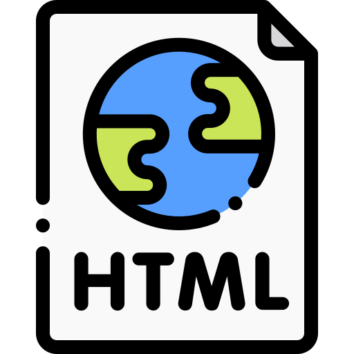

Objective
In the realm of web development, my objective is to infuse each project with an artistic flair, turning lines of code into visually captivating and immersive online experiences that resonate with users. My professional objective is to leverage my background in industrial engineering, channeling precision and analytical thinking into the realm of web design, crafting immersive online experiences that seamlessly blend functionality with aesthetic appeal.
the realm of web development, my objective is to infuse each project with an artistic flair, turning lines of code into visually captivating and immersive online experiences that resonate with users. My professional objective is to leverage my background in industrial engineering, channeling precision and analytical thinking into the realm of web design, crafting immersive online experiences that seamlessly blend functionality with aesthetic appeal.
Education
University of Southern California Aug. 2022-May 2024- B.S. in Industrial and Systems Engineering
- B.E in Engineering Management
Experience
Marketing InternMay 2022-Aug. 2022KS Medicare
- Telecommunicated between KS Medicare (South Korea) and ResWell Medicare (China) for manufacturing the heated tube for Continuous Positive Airway Pressure.
- Processed market research and collected feedback from the end user.
VitalAire Korea
- Managed electronic claims for the National Health Insurance Corporation, overseeing document preparation and content verification while ensuring government compliance.
- Facilitated the seamless transmission of tax invoices and prescriptions to the Health Insurance Corporation and maintained meticulous records of completed claims in the master file.
Skills
Programming Languages
- HTML/CSS
- Python
- MySQL
Other
- Figma
- SolidWorks
- Microsoft Office Suite